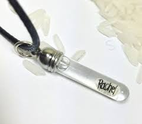

This recipe is called - Rice. Pronounced RIE-SSS

This is the most challenging of all our seasonal recipes. Also, the most expensive.
This dish, while seemingly bland, is a western delicay and is the only dish known to be worn
aroun one's neck as an alternative to consumption. The size of the dish is contingent on one's
budget as each grain can cost ~$30
Ingrediants
- Engraved Grain of rice(s). As much as you can afford. Be as creative as you want and have each grain engraved with something unique, perhaps a list of your exes?
- Disney World Pass
- That's it... schedule a dentasts appointment accordingly
- Should you have soft teeth, water may be added
Instructions
- Visit Disney
- Have popular american names engraved on your rice, such as "Karen" or "Dave". P.S. Make sure to bring your rice
- Wear your engraved rice around your neck for the entire day to add natural seasoning